A LA PRIMERA.
Tres versiones del diseño
Las mismas cinco pantallas, hechas tres veces. El diseño no dio un salto, dio dos: primero cambió de cara por completo, y después se pulió sin tocarla.
La primera propuesta
Verde lima sobre fondo grisáceo, titulares muy gruesos, esquinas muy redondeadas y emoji como iconos.

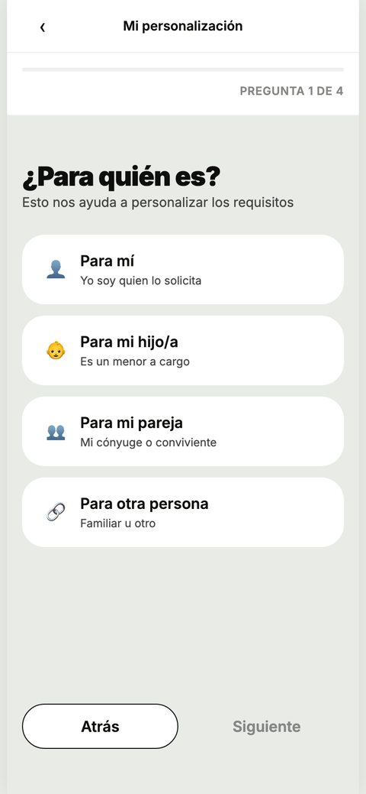
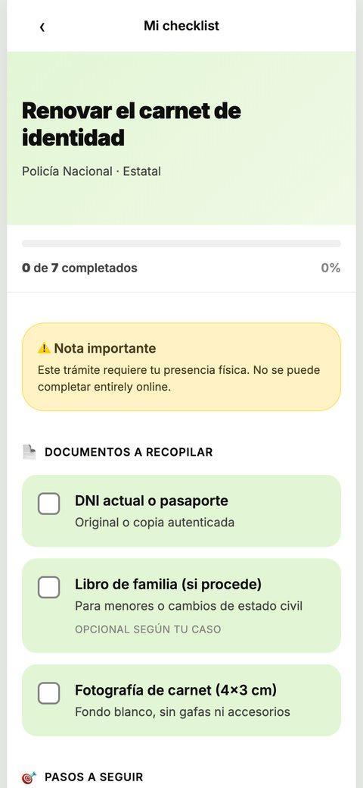

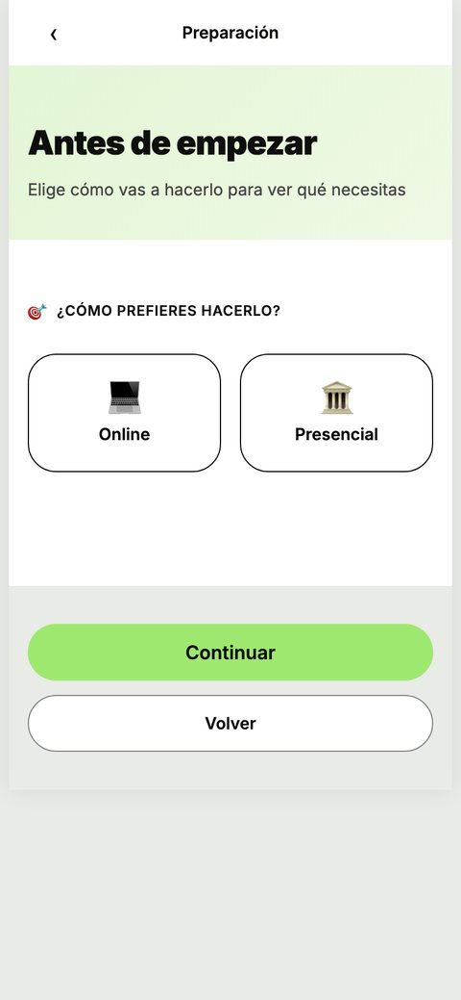
El giro al sello
Color de papel de expediente, tinta y violeta de sello. Esquinas discretas, iconos dibujados a mano y ni un verde.

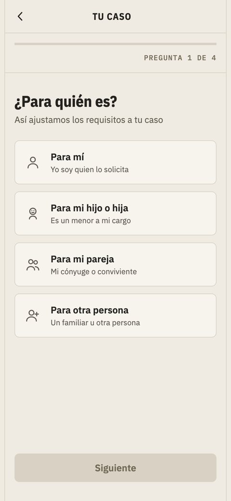
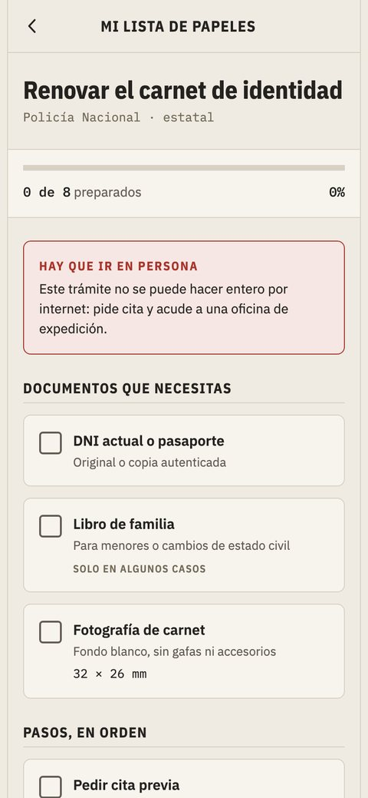

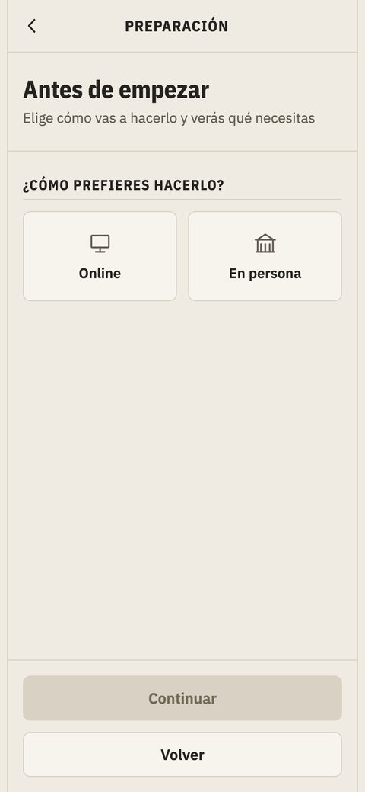
La misma, afinada
Bandas de color que separan las zonas, contadores macizos en violeta, más contraste en todo y un ocre propio para «en preparación».

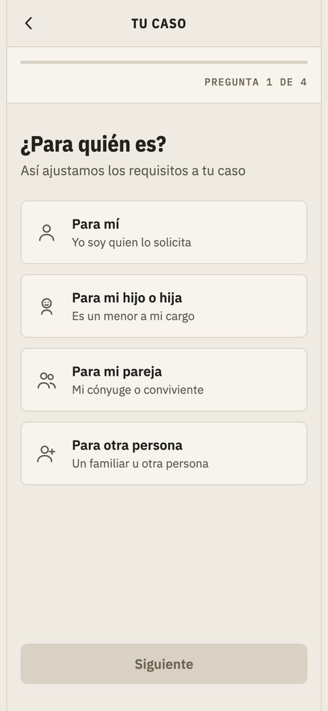
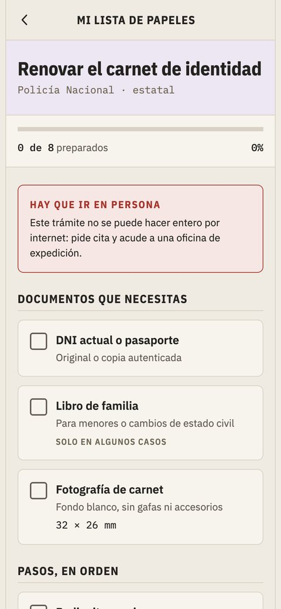

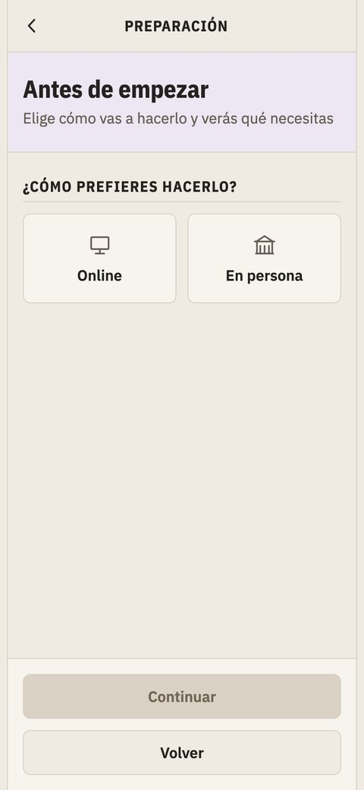
El detalle que no se ve a este tamaño
La etiqueta de «aún no hay ficha» pasó por tres estados hasta dar con el suyo. Primero un gris tan apagado que no se veía. Luego rojo, que se veía pero la mezclaba con los avisos de verdad, los de «hay que ir en persona». Y al final un ocre propio: se nota que falta algo, sin parecer una alarma.
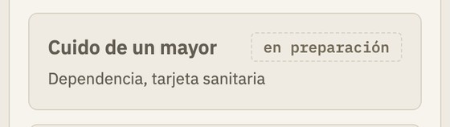
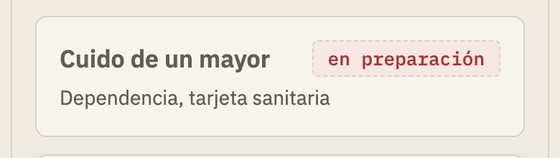
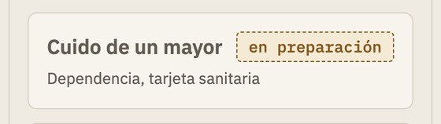